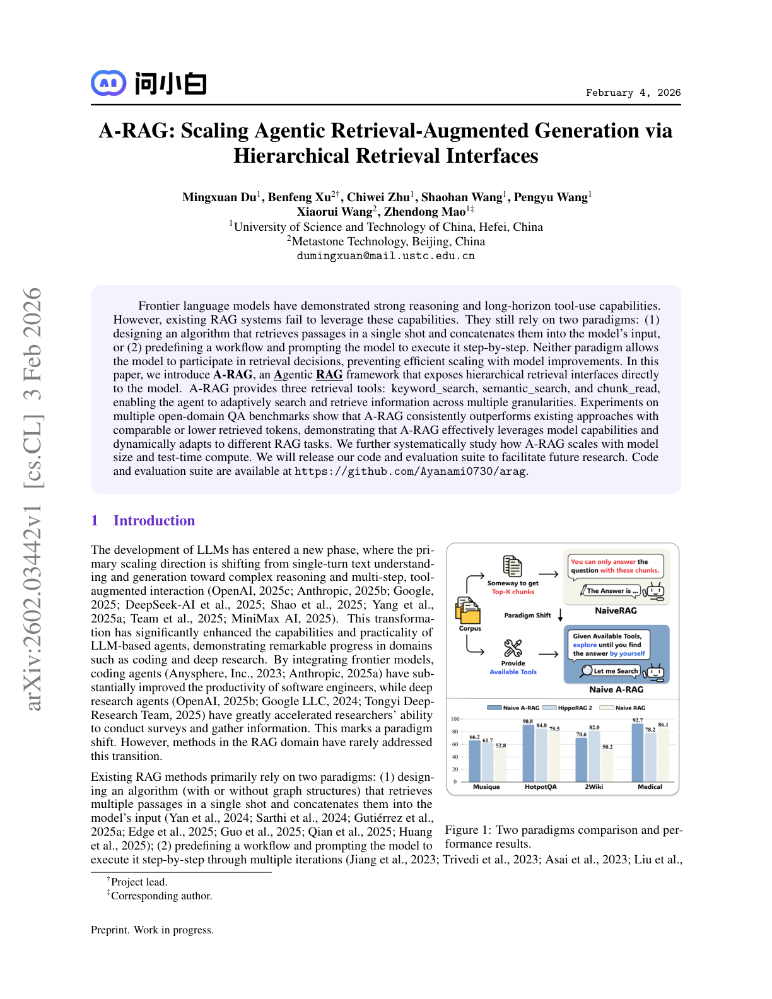
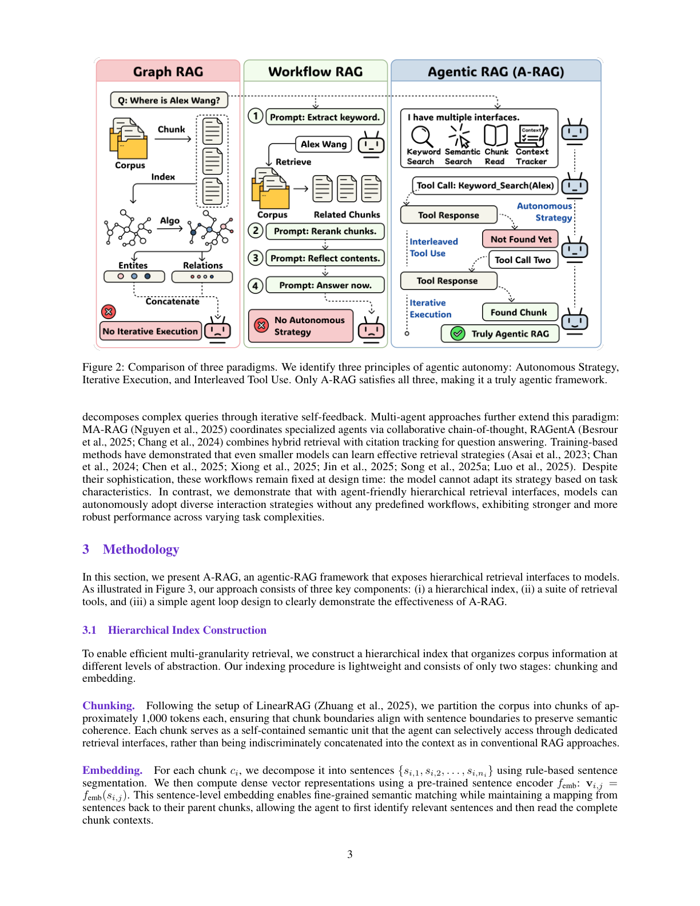
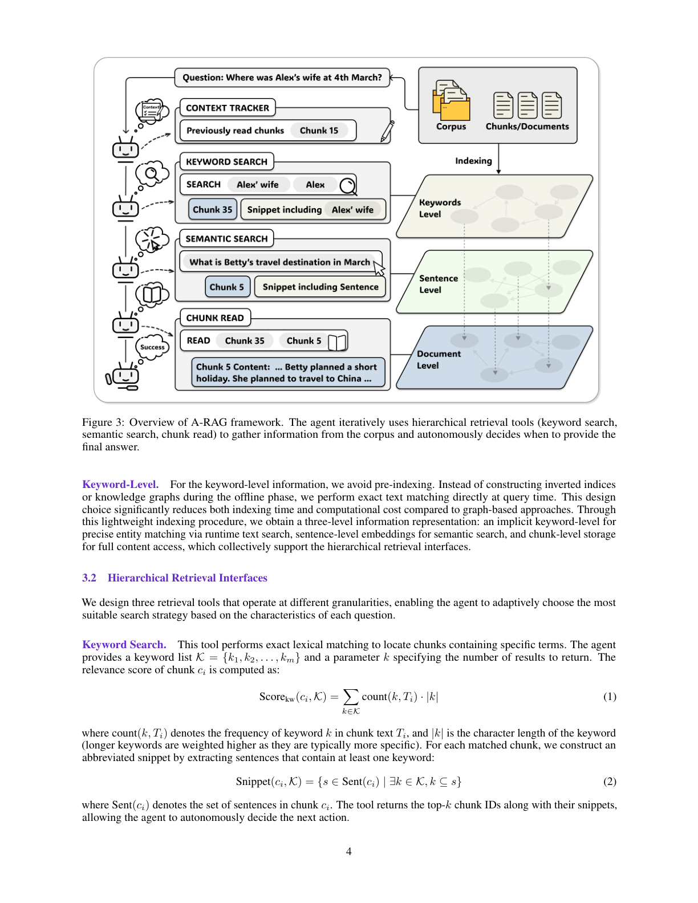
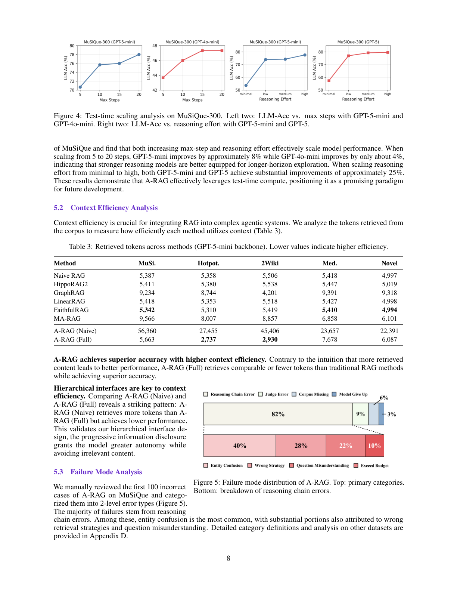
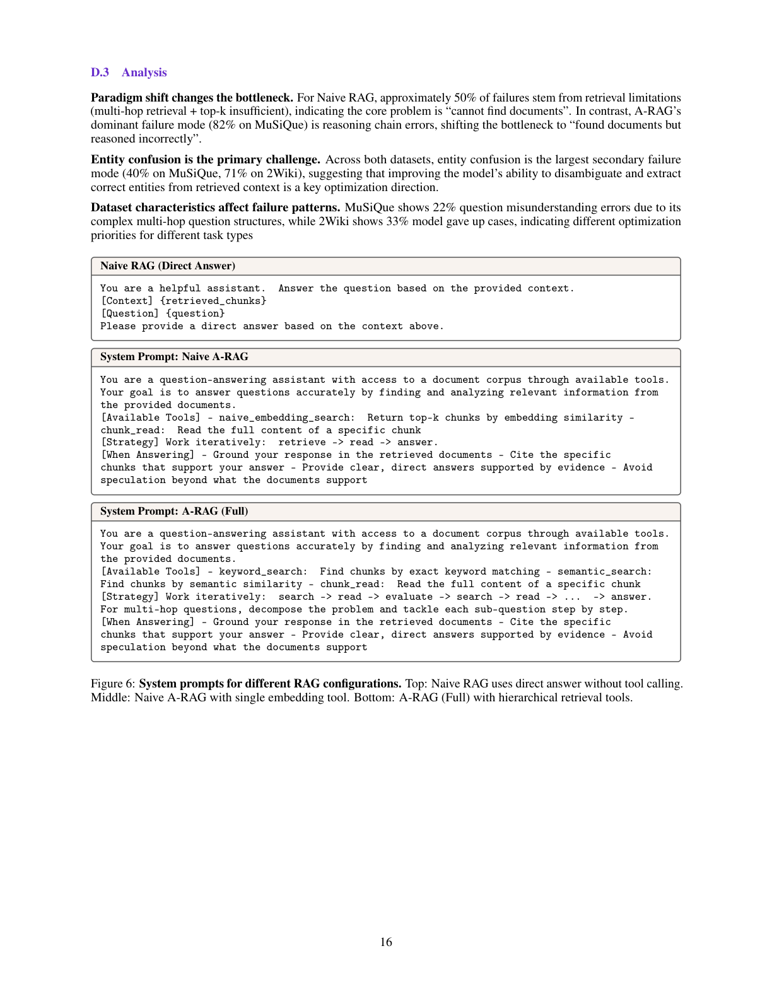
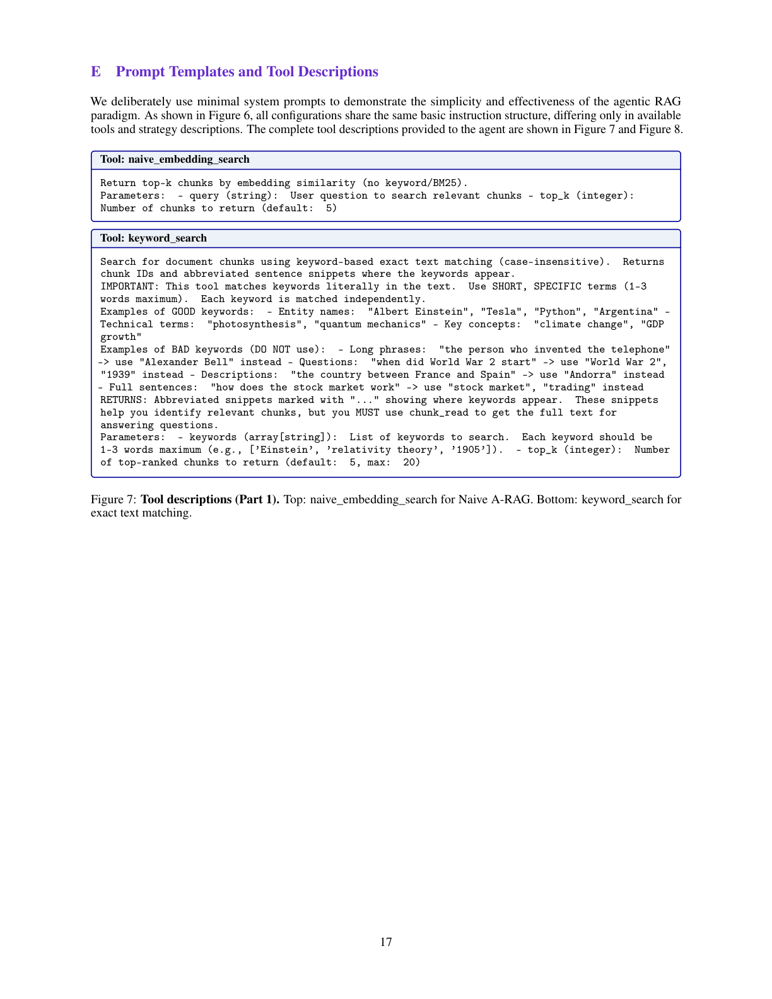
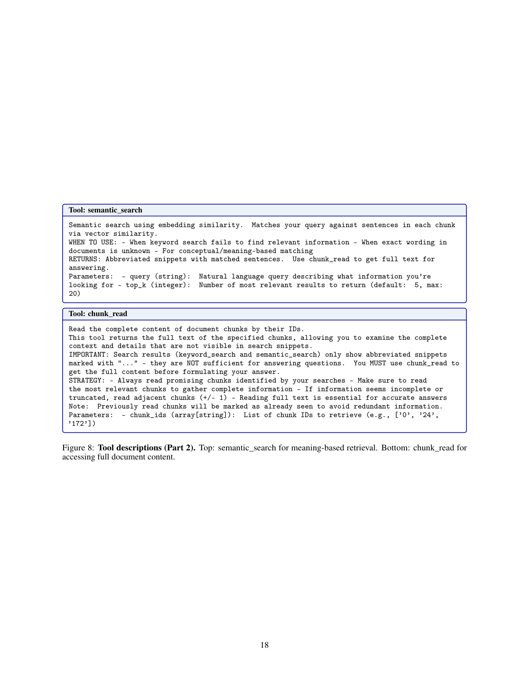

<!DOCTYPE html>
<html lang="zh-TW" class="scroll-smooth">
<head>
  <meta charset="UTF-8">
  <meta name="viewport" content="width=device-width, initial-scale=1.0">
  <title>A-RAG 論文完整學術翻譯與深度技術解析報告</title>
  <!-- Tailwind CSS -->
  <script src="https://cdn.tailwindcss.com"></script>
  <!-- Google Fonts -->
  <link rel="preconnect" href="https://fonts.googleapis.com">
  <link rel="preconnect" href="https://fonts.gstatic.com" crossorigin>
  <link href="https://fonts.googleapis.com/css2?family=Fira+Code:wght@400;500&family=Inter:wght@300;400;500;600;700;800&family=Noto+Sans+TC:wght@300;400;500;700;900&display=swap" rel="stylesheet">
  
  <script>
    tailwind.config = {
      darkMode: 'class',
      theme: {
        extend: {
          fontFamily: {
            sans: ['Inter', 'Noto Sans TC', 'sans-serif'],
            mono: ['Fira Code', 'monospace'],
          },
        }
      }
    }
  </script>
  <style>
    body {
      font-feature-settings: "cv02", "cv03", "cv04", "cv11";
    }
    /* 捲動軸美化 */
    ::-webkit-scrollbar {
      width: 8px;
    }
    ::-webkit-scrollbar-track {
      background: #f1f5f9;
    }
    .dark ::-webkit-scrollbar-track {
      background: #0f172a;
    }
    ::-webkit-scrollbar-thumb {
      background: #cbd5e1;
      border-radius: 4px;
    }
    .dark ::-webkit-scrollbar-thumb {
      background: #334155;
    }
    ::-webkit-scrollbar-thumb:hover {
      background: #94a3b8;
    }
  </style>
</head>
<body class="bg-slate-50 text-slate-900 font-sans transition-colors duration-300 dark:bg-slate-950 dark:text-slate-100">

  <!-- 頂部導覽列 -->
  <header class="sticky top-0 z-50 w-full border-b border-slate-350 bg-white/80 backdrop-blur-md dark:border-slate-800 dark:bg-slate-950/80 transition-colors">
    <div class="mx-auto flex h-16 max-w-7xl items-center justify-between px-4 sm:px-6 lg:px-8">
      <div class="flex items-center gap-2">
        <span class="text-xl font-bold bg-gradient-to-r from-slate-900 to-slate-700 bg-clip-text text-transparent dark:from-slate-100 dark:to-slate-400">A-RAG 論文學術評析筆記</span>
      </div>
      <div class="flex items-center gap-4">
        <!-- 亮色/暗色 切換按鈕 -->
        <button id="themeToggle" class="rounded-lg border border-slate-350 p-2 text-slate-700 hover:bg-slate-100 dark:border-slate-700 dark:text-slate-300 dark:hover:bg-slate-800 transition" title="切換主題">
          <svg id="sunIcon" class="h-5 w-5 hidden" fill="none" viewBox="0 0 24 24" stroke="currentColor">
            <path stroke-linecap="round" stroke-linejoin="round" stroke-width="2" d="M12 3v1m0 16v1m9-9h-1M4 9H3m15.364-6.364l-.707.707M6.343 17.657l-.707.707m12.728 0l-.707-.707M6.343 6.343l-.707-.707m12.728 12.728A9 9 0 115.636 5.636m12.728 12.728L12 12" />
          </svg>
          <svg id="moonIcon" class="h-5 w-5" fill="none" viewBox="0 0 24 24" stroke="currentColor">
            <path stroke-linecap="round" stroke-linejoin="round" stroke-width="2" d="M20.354 15.354A9 9 0 018.646 3.646 9.003 9.003 0 0012 21a9.003 9.003 0 008.354-5.646z" />
          </svg>
        </button>
        <a href="#one-page-summary" class="hidden sm:inline-block rounded bg-slate-900 text-white px-4 py-2 text-sm font-semibold hover:bg-slate-800 dark:bg-slate-200 dark:text-slate-900 dark:hover:bg-slate-300 transition">一頁式總結</a>
      </div>
    </div>
  </header>

  <!-- 主要內容區 -->
  <div class="mx-auto max-w-7xl px-4 py-8 sm:px-6 lg:px-8">
    <div class="grid grid-cols-1 gap-8 lg:grid-cols-12">
      
      <!-- 左側導覽列 -->
      <aside class="hidden lg:block lg:col-span-3 sticky top-24 self-start max-h-[80vh] overflow-y-auto pr-2 border-r border-slate-300 dark:border-slate-800">
        <h3 class="text-xs font-bold uppercase tracking-wider text-slate-400 dark:text-slate-500 mb-4">報告導覽目錄</h3>
        <nav class="space-y-1">
          <a href="#report-title" class="toc-link block rounded-md px-3 py-2 text-sm font-medium text-slate-700 hover:bg-slate-100 hover:text-slate-900 dark:text-slate-300 dark:hover:bg-slate-800 dark:hover:text-white transition">📄 報告封面與導讀</a>
          <a href="#paradigms" class="toc-link block rounded-md px-3 py-2 text-sm font-medium text-slate-700 hover:bg-slate-100 hover:text-slate-900 dark:text-slate-300 dark:hover:bg-slate-800 dark:hover:text-white transition">🧩 檢索範式對比</a>
          <a href="#ch1" class="toc-link block rounded-md px-3 py-2 text-sm font-medium text-slate-600 hover:bg-slate-100 hover:text-slate-900 dark:text-slate-400 dark:hover:bg-slate-800 dark:hover:text-white transition">1. 摘要 (Abstract)</a>
          <a href="#ch2" class="toc-link block rounded-md px-3 py-2 text-sm font-medium text-slate-600 hover:bg-slate-100 hover:text-slate-900 dark:text-slate-400 dark:hover:bg-slate-800 dark:hover:text-white transition">2. 引言 (Introduction)</a>
          <a href="#ch3" class="toc-link block rounded-md px-3 py-2 text-sm font-medium text-slate-600 hover:bg-slate-100 hover:text-slate-900 dark:text-slate-400 dark:hover:bg-slate-800 dark:hover:text-white transition">3. 相關工作 (Related Work)</a>
          <a href="#ch4" class="toc-link block rounded-md px-3 py-2 text-sm font-medium text-slate-600 hover:bg-slate-100 hover:text-slate-900 dark:text-slate-400 dark:hover:bg-slate-800 dark:hover:text-white transition">4. 方法設計 (Methodology)</a>
          <a href="#ch5" class="toc-link block rounded-md px-3 py-2 text-sm font-medium text-slate-600 hover:bg-slate-100 hover:text-slate-900 dark:text-slate-400 dark:hover:bg-slate-800 dark:hover:text-white transition">5. 實驗結果 (Experiments)</a>
          <a href="#ch6" class="toc-link block rounded-md px-3 py-2 text-sm font-medium text-slate-600 hover:bg-slate-100 hover:text-slate-900 dark:text-slate-400 dark:hover:bg-slate-800 dark:hover:text-white transition">6. 分析與討論 (Analysis & Discussion)</a>
          <a href="#ch7" class="toc-link block rounded-md px-3 py-2 text-sm font-medium text-slate-600 hover:bg-slate-100 hover:text-slate-900 dark:text-slate-400 dark:hover:bg-slate-800 dark:hover:text-white transition">7. 結論 (Conclusion)</a>
          <a href="#ch8" class="toc-link block rounded-md px-3 py-2 text-sm font-medium text-slate-600 hover:bg-slate-100 hover:text-slate-900 dark:text-slate-400 dark:hover:bg-slate-800 dark:hover:text-white transition">8. 限制 (Limitations)</a>
          <a href="#ch9" class="toc-link block rounded-md px-3 py-2 text-sm font-medium text-slate-600 hover:bg-slate-100 hover:text-slate-900 dark:text-slate-400 dark:hover:bg-slate-800 dark:hover:text-white transition">9. 倫理考量 (Ethical Considerations)</a>
          <a href="#ch10" class="toc-link block rounded-md px-3 py-2 text-sm font-medium text-slate-600 hover:bg-slate-100 hover:text-slate-900 dark:text-slate-400 dark:hover:bg-slate-800 dark:hover:text-white transition">10. 附錄 (Appendix)</a>
          <div class="my-4 border-t border-slate-300 dark:border-slate-800"></div>
          <a href="#one-page-summary" class="toc-link block rounded-md px-3 py-2 text-sm font-bold text-slate-700 hover:bg-slate-100 dark:text-slate-300 dark:hover:bg-slate-800 transition">📝 一頁式總結</a>
          <a href="#key-terms" class="toc-link block rounded-md px-3 py-2 text-sm font-bold text-slate-700 hover:bg-slate-100 dark:text-slate-300 dark:hover:bg-slate-800 transition">📋 10個關鍵對照</a>
          <a href="#contributions" class="toc-link block rounded-md px-3 py-2 text-sm font-bold text-slate-700 hover:bg-slate-100 dark:text-slate-300 dark:hover:bg-slate-800 transition">🏆 核心貢獻與限制</a>
          <a href="#takeaways" class="toc-link block rounded-md px-3 py-2 text-sm font-bold text-slate-700 hover:bg-slate-100 dark:text-slate-300 dark:hover:bg-slate-800 transition">💻 實用 RAG 實戰啟示</a>
        </nav>
      </aside>

      <!-- 右側長篇內容區 -->
      <main class="col-span-1 lg:col-span-9 space-y-16">

        <!-- 封面區 -->
        <section id="report-title" class="text-left py-8 border-b border-slate-300 dark:border-slate-800">
          <span class="inline-flex items-center gap-1.5 rounded bg-slate-100 px-3 py-1 text-xs font-semibold text-slate-800 dark:bg-slate-900 dark:text-slate-300 border border-slate-300 mb-6">
            📝 論文翻譯與技術分析評估報告
          </span>
          <h1 class="text-3xl font-extrabold sm:text-4xl tracking-tight text-slate-900 dark:text-white mb-6 leading-tight">
            階層式檢索介面下的代理式檢索增強生成擴展研究：A-RAG 框架評析
          </h1>
          <p class="text-base text-slate-500 dark:text-slate-400 max-w-3xl leading-relaxed">
            本報告針對 2026 年最新發表之論文 <strong>《A-RAG: Scaling Agentic Retrieval-Augmented Generation via Hierarchical Retrieval Interfaces》</strong> 進行完整之繁體中文學術翻譯、底層技術解析、公式直覺釋義及實驗結果深度討論。本篇報告中呈現之所有插圖，均直接且唯一提取自原著論文 PDF 文件，不包含任何外部不相關之佔位。
          </p>
          <div class="mt-6 flex flex-wrap gap-4 text-xs text-slate-400">
            <span>論文發表時間：2026 年 2 月</span>
            <span>•</span>
            <span>報告評析人：哈基米 (Hakimi)</span>
          </div>
        </section>

        <!-- 導讀區 -->
        <section class="bg-white rounded-xl p-6 sm:p-8 border border-slate-300 dark:bg-slate-900 dark:border-slate-800 transition-all">
          <h2 class="text-xl font-bold flex items-center gap-2 text-slate-800 dark:text-slate-100 mb-4">
            🔍 導讀：傳統 RAG 範式的瓶頸與代理式自主的必然
          </h2>
          <div class="space-y-4 text-sm text-slate-600 dark:text-slate-300 leading-relaxed text-justify">
            <p>
              傳統的檢索增強生成（Retrieval-Augmented Generation, RAG）在處理複雜之多步推理（Multi-hop Reasoning）問題時，其限制逐漸顯露。現有方法的核心瓶頸在於：<strong>檢索器（Retriever）與大語言模型（LLM）是脫節的。</strong> 傳統系統不論是單次檢索（Single-shot Retrieval）或是由人為寫死之工作流（Hard-coded Workflows）所驅動的多輪檢索，均將模型置於被動的資訊接收端。
            </p>
            <p>
              這會導致雙重困境：其一，由於無法動態調整檢索策略，一旦初始檢索出的上下文（Context）不正確或不完整，模型便無法自主修正檢索路徑，導致生成質量受限；其二，為保證召回率，系統往往被迫向上下文視窗中堆疊大量大尺寸的分塊（Chunks），引入大量噪聲並極大增加了輸入 Token 成本與計算開銷。
            </p>
            <p>
              本篇論文《A-RAG》直擊該問題，核心研究問題為：<strong>「大語言模型是否能在不需要工程硬編碼的情況下，自主在多個層級的檢索介面中選擇策略，並且隨著測試時計算量（Test-time Compute）的增加來提升準確度？」</strong> 為此，作者提出了 A-RAG 框架，核心思想是建立一套對「智能代理（Agent）」友善的多粒度（Multi-granularity）檢索接口，將決策主導權交還給 LLM，使模型能夠自發泛化出高效率的動態檢索路徑。
            </p>
          </div>
        </section>

        <!-- 範式對比區 -->
        <section id="paradigms" class="scroll-mt-20">
          <h2 class="text-xl font-bold text-slate-850 dark:text-slate-150 mb-6 border-b border-slate-300 dark:border-slate-800 pb-2 flex items-center gap-2">
            📊 核心檢索範式之概念與架構對比
          </h2>
          <div class="grid grid-cols-1 md:grid-cols-3 gap-6">
            
            <div class="bg-white rounded-lg p-6 border border-slate-300 dark:bg-slate-900 dark:border-slate-800">
              <h3 class="text-sm font-bold text-slate-800 dark:text-slate-100 mb-2">1. 傳統 RAG (Naive RAG)</h3>
              <p class="text-xs text-slate-500 dark:text-slate-400 leading-relaxed text-justify">
                <strong>定義與行為</strong>：靜態的單向管道。在模型開始生成前，檢索器利用單次查詢（Single-shot Query）自向量數據庫中提取 Top-k 個分塊（一般為 1000 tokens 左右之 Chunk），不加區別地拼接至 Prompt 中餵給 LLM。<br>
                <strong>關鍵局限</strong>：一擊脫離，LLM 完全被動接收，不具備多輪修正能力，易受 Context 冗餘與檢索限制影響。
              </p>
            </div>

            <div class="bg-white rounded-lg p-6 border border-slate-300 dark:bg-slate-900 dark:border-slate-800">
              <h3 class="text-sm font-bold text-slate-800 dark:text-slate-100 mb-2">2. 工作流 RAG (Workflow RAG)</h3>
              <p class="text-xs text-slate-500 dark:text-slate-400 leading-relaxed text-justify">
                <strong>定義與行為</strong>：雖然支持多輪互動，但其檢索、規劃、評估流程在設計時（Design Time）便已被軟體工程師寫死在代碼架構中（如 FLARE、RAGentA、MA-RAG 等）。<br>
                <strong>關鍵局限</strong>：流程極其僵硬。模型僅在固定節點中被當作填充內容之調用單元，無法根據具體任務靈活變更檢索戰術，會導致多餘的 Token 耗損。
              </p>
            </div>

            <div class="bg-white rounded-lg p-6 border-2 border-slate-800 dark:bg-slate-900 dark:border-slate-100 shadow-md">
              <h3 class="text-sm font-bold text-slate-900 dark:text-slate-100 mb-2 flex items-center justify-between">
                <span>3. 代理式 RAG (A-RAG Ours)</span>
                <span class="text-[10px] bg-slate-800 text-white dark:bg-slate-200 dark:text-slate-900 font-bold px-1.5 py-0.5 rounded">FULL</span>
              </h3>
              <p class="text-xs text-slate-600 dark:text-slate-300 leading-relaxed text-justify">
                <strong>定義與行為</strong>：完全自主的 Agent 機制。不依賴硬編碼流程，僅向 LLM 暴露一組階層式 API（關鍵字搜尋、語意搜尋、區塊閱讀），配合 Context Tracker 機制，在 ReAct 自主循環中自我決策策略、執行並終止。<br>
                <strong>關鍵局限</strong>：高度靈活、高精準度、低 Context 開銷，能高效利用 Test-Time Scale 計算資源。
              </p>
            </div>

          </div>
        </section>

        <!-- 第 1-10 章翻譯解析 -->
        <div class="space-y-16">

          <!-- CHAPTER 1: Abstract -->
          <section id="ch1" class="scroll-mt-20 border-t-2 border-slate-300 dark:border-slate-800 pt-10">
            <h3 class="text-lg font-bold text-slate-900 dark:text-white mb-6">1. 摘要（Abstract）</h3>
            
            <div class="space-y-6 text-sm">
              <div class="pl-4 border-l-4 border-slate-800 dark:border-slate-300 space-y-2">
                <span class="text-xs font-bold text-slate-400 dark:text-slate-500 block uppercase">【論文完整翻譯】</span>
                <p class="text-slate-700 dark:text-slate-300 text-justify leading-relaxed">
                  檢索增強生成（Retrieval-Augmented Generation, RAG）已成為緩解大語言模型（Large Language Models, LLMs）幻覺的一種廣泛採用的範式。然而，傳統 RAG 方法和現有的基於代理之 RAG（Workflow RAG）系統本質上是靜態的，或受限於預先定義的工作流，這阻礙了模型根據特定任務動態調整檢索策略、自主決定何時已收集足夠資訊、或在不引入過多上下文冗餘的情況下，漸進式地獲取多粒度資訊。
                  為了解決這些局限性，我們提出了 A-RAG，這是一個具有階層式檢索介面（Hierarchical Retrieval Interfaces）的代理式檢索增強生成（Agentic RAG）框架。A-RAG 將外部語料庫組織成三個層級：關鍵字級、句子級與區塊級，並對大語言模型暴露對應的檢索工具，使其能在「思考-行動-觀察（Reasoning-Action-Observation）」的循環中自主決策檢索方向。
                  在多個複雜的多跳推理基準測試中進行的全面實驗表明，A-RAG 的表現顯著超越了現有的 Graph RAG 和 Workflow RAG 方法。此外，我們對測試時計算擴展（Test-Time Scaling）行為進行了系統性研究，證明了 A-RAG 的性能隨著測試時計算資源的增加而穩步提升，展示出與大模型推理能力協同擴展的優異效能。
                </p>
              </div>

              <!-- Figure 1 -->
              <div class="my-6 text-center bg-white dark:bg-slate-900 p-4 border border-slate-300 dark:border-slate-800 rounded-lg max-w-2xl mx-auto">
                
                <p class="text-xs text-slate-400 mt-2 font-medium">📜 圖 1 論文原圖對照：傳統 RAG 與最基礎的代理式（Naive Agentic）RAG 框架決策機制與精度對比</p>
              </div>

              <div class="bg-slate-100 dark:bg-slate-900 rounded-lg p-5 border border-slate-300 dark:border-slate-800 space-y-2">
                <span class="text-xs font-bold text-slate-400 block uppercase">【技術白話解析】</span>
                <p class="text-slate-600 dark:text-slate-300 text-justify">
                  傳統 RAG 在大模型推理前一次性拉取大尺寸文檔區塊，造成大量 Token 浪費；而 Workflow RAG 則預先定義了固定流程。A-RAG 透過將文檔索引劃分為三層（Keyword 關鍵字、Sentence 句子、Chunk 區塊），僅先將字面匹配或向量匹配得到的「片段（Snippet）」作為提示，讓 LLM 當作決策大腦，自行在推理循環中決定是否要「區塊精讀（Chunk Read）」，大幅降低 Context 冗餘度。
                </p>
              </div>

              <div class="text-xs font-mono bg-slate-200/50 dark:bg-slate-900 p-4 rounded border border-slate-300 dark:border-slate-800 text-justify">
                <span class="text-slate-400 font-bold block mb-1">【原文重要主張】</span>
                "A-RAG is an Agentic RAG framework featuring hierarchical retrieval interfaces. Our key insight is that information within a corpus is inherently organized at multiple granularities, ranging from fine-grained keyword-level signals to coarser sentence-level and chunk-level representations."
              </div>

              <div class="text-xs text-slate-500 bg-slate-100 dark:bg-slate-900 p-4 rounded border border-slate-300 dark:border-slate-800">
                ⚠️ <strong>【讀者提醒】</strong>：摘要中提到的「漸進式（Progressive）」資訊揭露是 A-RAG 降本增效的關鍵。它不直接把完整文檔餵入 Prompt，而是透過 Snippet 句子提示引導，只有當模型發起特定指令時才讀取完整 Chunk，讀者在此處容易忽略該階層式結構的動態調用性質。
              </div>
            </div>
          </section>

          <!-- CHAPTER 2: Introduction -->
          <section id="ch2" class="scroll-mt-20 border-t border-slate-300 dark:border-slate-800 pt-10">
            <h3 class="text-lg font-bold text-slate-900 dark:text-white mb-6">2. 引言（Introduction）</h3>
            
            <div class="space-y-6 text-sm">
              <div class="pl-4 border-l-4 border-slate-800 dark:border-slate-300 space-y-2">
                <span class="text-xs font-bold text-slate-400 dark:text-slate-500 block uppercase">【論文完整翻譯】</span>
                <p class="text-slate-700 dark:text-slate-300 text-justify leading-relaxed">
                  儘管檢索增強生成（RAG）在彌補模型內建知識滯後和幻覺方面取得了巨大成功，但在多步推理任務（如 MuSiQue、HotpotQA、2WikiMultiHop）中，其被動的「單次檢索-生成」管線容易出現關鍵信息缺失。為了解決多步推理問題，學界隨後研發了 Graph RAG 與 Workflow RAG 等複雜變體。然而，這些工作流是在設計時（Design Time）硬編碼（Hard-coded）定義的。
                  正如 Figure 1 所示，Naive RAG 與 Naive Agentic RAG 的本質區別在於代理人是否具備「自主性（Autonomy）」。我們的初步實驗（Preliminary Experiments）表明，即使是最簡單的 Naive Agentic RAG，在僅配備單個基於語意向量的檢索工具的情況下，其表現也一致超越了 Naive RAG 與之前的基座模型表現。這有力地證明了代理式 RAG（Agentic RAG）範式的巨大潛力。
                  為了解決現有方法的限制，我們提出 A-RAG 框架。我們將外部語料庫組織成三個層級：(1) 基於執行期字面精確匹配的「關鍵字級（Keyword-level）」，(2) 基於向量嵌入匹配的「句子級（Sentence-level）」，與 (3) 基於完整內容讀取的「區塊級（Chunk-level）」。
                  我們的貢獻總結如下：
                  1. 我們指出從靜態 LLM 管道向動態代理人系統的範式轉移（Paradigm Shift），並強調將 RAG 重塑為代理式框架的必要性；
                  2. 我們引入了 A-RAG 框架，通過全面的實驗，證實了多粒度階層工具在解鎖模型性能方面的必要性；
                  3. We present further scaling analyses across multiple dimensions, demonstrating that our framework scales efficiently alongside advances in model capabilities and test-time computation. (我們提供了關於測試時擴展的多維度分析，證明了該框架能高效隨測試時計算資源與大模型推理能力的提升而擴展。)
                </p>
              </div>

              <div class="bg-slate-100 dark:bg-slate-900 rounded-lg p-5 border border-slate-300 dark:border-slate-800 space-y-2">
                <span class="text-xs font-bold text-slate-400 block uppercase">【技術白話解析】</span>
                <p class="text-slate-600 dark:text-slate-300 text-justify">
                  傳統 RAG 在複雜的多步關聯問題中，無法因應第一步搜尋到的資訊去調整第二步搜尋的方向。論文的 Preliminary Experiment 發現，只要給大語言模型配備一個簡單的向量檢索工具，讓它自主判斷何時調用（即使不加任何複雜算法），效果就已經大幅勝過所有固定流程的系統。這暗示了，未來的 RAG 優化重點應該在於「如何給大模型提供好用的接口讓它自己檢索」，而非寫死邏輯。
                </p>
              </div>

              <div class="text-xs font-mono bg-slate-200/50 dark:bg-slate-900 p-4 rounded border border-slate-300 dark:border-slate-800 text-justify">
                <span class="text-slate-400 font-bold block mb-1">【原文重要主張】</span>
                "Even the simplest Naive Agentic RAG, equipped with only a single embedding-based tool to retrieve from the corpus, consistently outperforms Naive RAG and previous baselines. This result demonstrates the potential of the agentic RAG paradigm."
              </div>

              <div class="text-xs text-slate-500 bg-slate-100 dark:bg-slate-900 p-4 rounded border border-slate-300 dark:border-slate-800">
                ⚠️ <strong>【讀者提醒】</strong>：讀者易混淆「Naive Agentic RAG」與「A-RAG (Full)」。前者在論文中僅作為消融對照組（Ablation Control），其只配備了一個 semantic embedding 檢索工具；而 A-RAG (Full) 則同時擁有 Keyword Search, Semantic Search 與 Chunk Read。
              </div>
            </div>
          </section>

          <!-- CHAPTER 3: Related Work -->
          <section id="ch3" class="scroll-mt-20 border-t border-slate-300 dark:border-slate-800 pt-10">
            <h3 class="text-lg font-bold text-slate-900 dark:text-white mb-6">3. 相關工作（Related Work）</h3>
            
            <div class="space-y-6 text-sm">
              <div class="pl-4 border-l-4 border-slate-800 dark:border-slate-300 space-y-2">
                <span class="text-xs font-bold text-slate-400 dark:text-slate-500 block uppercase">【論文完整翻譯】</span>
                <p class="text-slate-700 dark:text-slate-300 text-justify leading-relaxed">
                  我們在 Figure 2 中比較了三種 RAG 範式：Graph RAG、Workflow RAG 以及代理式 RAG（A-RAG）。我們提出了定義「真實代理自主權（True Agentic Autonomy）」的三個核心原則，並證實 A-RAG 是唯一滿足全部三項原則的範式：
                  <strong>1. 自主策略（Autonomous Strategy）</strong>：模型是否能在執行期動態選擇和組織高層次戰術，而非受限於單一的、預先指定的工作流。
                  <strong>2. 迭代執行（Iterative Execution）</strong>：模型是否能在推理循環中多輪反覆地進行檢索和修正。
                  <strong>3. 交錯工具調用（Interleaved Tool Use）</strong>：模型是否能在「思考-行動-觀察」循環中，無縫地混合調用不同特性的工具。
                  
                  <strong>3.1 基礎 RAG（Basic RAG）</strong>：早期研究主要依賴檢索器與大模型的單向流水線拼接。後續研究雖在查詢重寫、自適應路由、排序與重排（Reranking）方面有所改進，但 LLM 仍被動接收固定上下文。
                  <strong>3.2 Graph RAG</strong>：微軟於 2024 年提出 GraphRAG，透過構建實體關係圖進行全局理解。RAPTOR 透過遞迴摘要構建層次化摘要樹，LightRAG 將圖譜與向量結合，HippoRAG 則模擬大腦海馬迴記憶索引。儘管這些方法採用了更豐富的結構，但其檢索路徑完全受控於預先設計的檢索演算法，大模型本身不參與執行期路徑修正。
                  <strong>3.3 Workflow RAG</strong>：許多工作探索了 RAG 的代理人化，如 FLARE 在模型生成信心不足時觸發檢索，IRCoT 將思維鏈推理與檢索步驟交錯，RA-ISF 通過迭代自我反饋分解複雜查詢。此外，MA-RAG 協調多個專業化 Agent 協同，RAGentA 結合混合檢索與引用追蹤。然而，不論是基於無訓練或基於微調/強化學習訓練之方法，其工作流在設計之初即被固定，模型無法因任務複雜度動態改變控制代碼邏輯。
                </p>
              </div>

              <!-- Figure 2 Zoomed Image -->
              <div class="my-6 text-center bg-white dark:bg-slate-900 p-4 border border-slate-300 dark:border-slate-800 rounded-lg max-w-2xl mx-auto">
                
                <p class="text-xs text-slate-400 mt-2 font-medium">📜 圖 2 論文原圖對照：三大檢索範式（Graph RAG, Workflow RAG, Agentic RAG）在三個自主特徵維度的全面對照</p>
              </div>

              <div class="bg-slate-100 dark:bg-slate-900 rounded-lg p-5 border border-slate-300 dark:border-slate-800 space-y-2">
                <span class="text-xs font-bold text-slate-400 block uppercase">【技術白話解析】</span>
                <p class="text-slate-600 dark:text-slate-300 text-justify">
                  本章對 RAG 技術史進行了系統梳理。Graph RAG (如微軟、LightRAG、HippoRAG) 的缺陷在於，所有的「圖結構檢索算法」是預先寫死的程式，LLM 只是負責讀取結果；Workflow RAG (如 FLARE, RAGentA) 的流程雖然是多輪的，但其判斷邏輯（如：相似度 < 閥值時檢索）仍由外部代碼庫固定。唯有 A-RAG，將檢索權完全賦予 LLM，在自主性矩陣中拿到了唯一的三項大滿貫（滿足自主策略、迭代執行、交錯工具）。
                </p>
              </div>

              <div class="text-xs font-mono bg-slate-200/50 dark:bg-slate-900 p-4 rounded border border-slate-300 dark:border-slate-800 text-justify">
                <span class="text-slate-400 font-bold block mb-1">【原文重要主張】</span>
                "While these methods incorporate richer structure, they still rely on predefined retrieval algorithms rather than model-driven decisions. If the initially retrieved context is insufficient, the model cannot leverage its reasoning capabilities to iteratively gather more comprehensive and accurate information."
              </div>

              <div class="text-xs text-slate-500 bg-slate-100 dark:bg-slate-900 p-4 rounded border border-slate-300 dark:border-slate-800">
                ⚠️ <strong>【讀者提醒】</strong>：論文對 Graph RAG 的定位是「依賴預定義算法的靜態檢索」，不要誤以為 A-RAG 內置了複雜的 Knowledge Graph（知識圖譜）。A-RAG 故意去成了任何知識圖譜的線下建置，只依賴輕量級的分塊與純句子級 Embedding。
              </div>
            </div>
          </section>

          <!-- CHAPTER 4: Methodology -->
          <section id="ch4" class="scroll-mt-20 border-t border-slate-300 dark:border-slate-800 pt-10">
            <h3 class="text-lg font-bold text-slate-900 dark:text-white mb-6">4. 方法設計（Methodology）</h3>
            
            <div class="space-y-6 text-sm">
              <div class="pl-4 border-l-4 border-slate-800 dark:border-slate-300 space-y-2">
                <span class="text-xs font-bold text-slate-400 dark:text-slate-500 block uppercase">【論文完整翻譯】</span>
                <p class="text-slate-700 dark:text-slate-300 text-justify leading-relaxed">
                  A-RAG 框架由三個關鍵組件組成：(i) 階層式索引、(ii) 階層式檢索介面、以及 (iii) 極簡代理人循環。<br><br>
                  
                  <strong>4.1 階層式索引構建</strong>：
                  本階段極其輕量，僅包含兩階段：
                  * <strong>分塊（Chunking）</strong>：我們遵循 LinearRAG，將語料庫切割為約 1,000 Token 的區塊（Chunks），確保分塊邊界與句子邊界對齊。
                  * <strong>句子級嵌入（Embedding）</strong>：對每個區塊 $c_i$，我們使用規則進行句子分割，並利用預訓練句子編碼器 $f_{	ext{emb}}$ 計算每個句子 $s_{i,j}$ 的 dense 向量：
                  $$v_{i,j} = f_{	ext{emb}}(s_{i,j})$$
                  這種句子級的 Embedding 既支持細粒度匹配，又維護了指向其父區塊（Parent Chunk）的映射關係。<br>
                  * <strong>關鍵字級（Keyword-Level）</strong>：我們避免預先構建倒排索引（Inverted Indices）或知識圖譜，而是在執行期（Runtime）直接對查詢詞進行字面精準匹配，從而大幅度節省索引構建開銷。<br><br>

                  <strong>4.2 階層式檢索介面（Hierarchical Retrieval Interfaces）</strong>：
                  我們設計了三種不同粒度的檢索工具：
                  * <strong>關鍵字搜尋（keyword_search）</strong>：大模型提供一組關鍵字列表 $K = \{k_1, k_2, \dots, k_m\}$ 與返回個數 $k$。區塊 $c_i$ 的得分公式為：
                  $$	ext{Score}_{	ext{kw}}(c_i, K) = \sum_{k \in K} 	ext{count}(k, T_i) \cdot |k|$$
                  其中 $	ext{count}(k, T_i)$ 代表關鍵字 $k$ 在區塊文本 $T_i$ 中出現的次數，而 $|k|$ 為關鍵字字元長度（長關鍵字因包含更具體的語義特徵而給予更高權重）。此工具不返回整段文檔，而是僅提取包含關鍵字的句子，拼成碎片摘要返回：
                  $$	ext{Snippet}(c_i, K) = \{s \in 	ext{Sent}(c_i) \mid \exists k \in K, k \subseteq s\}$$
                  * <strong>語意搜尋（semantic_search）</strong>：大模型輸入自然語言查詢 $q$。系統先計算其 Embedding 向量 $v_q = f_{	ext{emb}}(q)$，再計算與數據庫中句子向量 $v_{i,j}$ 的夾角餘弦值：
                  $$	ext{Score}_{	ext{sem}}(s_{i,j}, q) = rac{v_{i,j}^T v_q}{\|v_{i,j}\| \|v_q\|}$$
                  系統提取最高相似度的句子，按其父區塊匯總，各區塊分數取其底下句子最高分者。工具返回前 $k$ 個區塊 ID 及其匹配句組成的 Snippet。
                  * <strong>區塊閱讀（chunk_read）</strong>：當模型閱讀上述搜尋工具返回的 Snippets 後，可輸入特定的 Chunk ID，拉取其完整的 1,000-token 全文內容。這是唯一完整載入大文本的工具。<br><br>

                  <strong>4.3 代理人循環與上下文追蹤器</strong>：
                  我們採用 ReAct 式框架。在每個迭代步，模型選擇單一工具調用，觀察返回結果，再執行下一步。為防止模型在長步數探索中產生鬼打牆（重複閱讀同個區塊）的情況，我們維護了一個已讀集合 $C_{	ext{read}} = \{c_{i1}, c_{i2}, \dots, c_{ik}\}$。一旦模型嘗試重複調用已被加載的區塊 $c_i \in C_{	ext{read}}$ 時，Context Tracker 會進行攔截，僅向模型返回一條已讀提示，而不重複返回文檔文本，極大節省了輸入 Token。
                </p>
              </div>

              <!-- Figure 3 -->
              <div class="my-6 text-center bg-white dark:bg-slate-900 p-4 border border-slate-300 dark:border-slate-800 rounded-lg max-w-2xl mx-auto">
                
                <p class="text-xs text-slate-400 mt-2 font-medium">📜 圖 3 論文原圖對照：A-RAG 系統框架架構圖，包含層級化索引、工具介面與 React 自主決策循環</p>
              </div>

              <div class="bg-slate-100 dark:bg-slate-900 rounded-lg p-5 border border-slate-300 dark:border-slate-800 space-y-2">
                <span class="text-xs font-bold text-slate-400 block uppercase">【技術白話解析】</span>
                <p class="text-slate-600 dark:text-slate-300 text-justify">
                  此處有兩個精妙的工程設計：其一，<strong>公式 (1)</strong> 中計算關鍵字得分時，特別乘以字元長度 $|k|$。這能讓系統自動偏好特定的專有名詞（如 "Alexander Bell" 比單詞 "Bell" 得分權重更高），大幅減少常見無關詞彙的匹配噪音。其二，<strong>Context Tracker</strong> 是一道核心防火牆。在多輪推理中，大模型常忘記自己讀過哪些 Chunk，進而反覆執行 `chunk_read` 調用；Tracker 在執行期主動攔阻重複文本的回傳，是 A-RAG 消耗 Token 遠低於其他方法之核心原因。
                </p>
              </div>

              <div class="text-xs font-mono bg-slate-200/50 dark:bg-slate-900 p-4 rounded border border-slate-300 dark:border-slate-800 text-justify">
                <span class="text-slate-400 font-bold block mb-1">【原文重要主張】</span>
                "When the agent attempts to read a chunk $c_i \in C_{	ext{read}}$, instead of returning the full text, the context tracker intercepts the call and prompts the agent that the content is already in its history."
              </div>

              <div class="text-xs text-slate-500 bg-slate-100 dark:bg-slate-900 p-4 rounded border border-slate-300 dark:border-slate-800">
                ⚠️ <strong>【讀者提醒】</strong>：許多開發者認為 RAG 只要建立「倒排索引」即可。但 A-RAG 在建置期<strong>完全不建立 Keyword 倒排索引</strong>，而是採用執行期「即時字面匹配」！這對於高頻動態更新的知識庫而言，極大地免除了維護複雜索引的工程痛點，非常值得參考。
              </div>
            </div>
          </section>

          <!-- CHAPTER 5: Experiments -->
          <section id="ch5" class="scroll-mt-20 border-t border-slate-300 dark:border-slate-800 pt-10">
            <h3 class="text-lg font-bold text-slate-900 dark:text-white mb-6">5. 實驗結果（Experiments）</h3>
            
            <div class="space-y-6 text-sm">
              <div class="pl-4 border-l-4 border-slate-800 dark:border-slate-300 space-y-2">
                <span class="text-xs font-bold text-slate-400 dark:text-slate-500 block uppercase">【論文完整翻譯】</span>
                <p class="text-slate-700 dark:text-slate-300 text-justify leading-relaxed">
                  我們在 MuSiQue、HotpotQA、2WikiMultiHopQA、以及 GraphRAG-Bench 包含的 Medical 與 Novel 數據集上進行了全面實驗，均本地重現。底層模型採用 GPT-4o-mini 與 GPT-5-mini。
                  
                  <strong>表 1：基線方法與 A-RAG 性能對比（LLM-Acc / Contain-Acc） 📊</strong><br>
                  如表 1 所示，在 GPT-5-mini Backbone 下，傳統 Naive RAG、GraphRAG 以及現有最先進之 Workflow RAG（包括 HippoRAG2、LinearRAG、MA-RAG、RAGentA）實測數據如下：
                  * <strong>MuSiQue</strong>：A-RAG (Full) 精度達到 <strong>74.1%</strong>，大幅度超越 HippoRAG2（61.7%）、LinearRAG（62.4%）與 Naive RAG（52.8%）。
                  * <strong>HotpotQA</strong>：A-RAG (Full) 精度達到 <strong>94.5%</strong>，領先 Naive RAG（81.2%）和 HippoRAG2（84.8%）。
                  * <strong>2WikiMultiHop</strong>：A-RAG (Full) 達到 <strong>89.7%</strong>，顯著領先 Naive RAG（50.2%）和 GraphRAG（66.5%）。
                  
                  此外，簡化版對照組 A-RAG (Naive)——僅配備單個 semantic_search 工具——其表現（MuSiQue 66.2%、HotpotQA 90.8%、2Wiki 70.6%）亦超越了絕大多數複雜的 Graph RAG 與 Workflow RAG。這表明給予模型自主決策權的極大優越性。<br><br>

                  <strong>消融實驗（Table 2 Ablation Study）</strong>：
                  我們在 GPT-5-mini backbone 上系統性移除了各組件：
                  * <strong>完整版 A-RAG (Full)</strong>：在 MuSiQue 下為 <strong>74.1%</strong>。
                  * <strong>移除關鍵字檢索（w/o Keyword Search）</strong>：精度降至 <strong>72.6%</strong>，表明字面匹配在精確定位人名、時間等實體時至關重要。
                  * <strong>移除語意檢索（w/o Semantic Search）</strong>：精度暴跌至 <strong>69.4%</strong>，證實向量模糊檢索在寬泛概念對齊上的基石地位。
                  * <strong>移除區塊閱讀（w/o Chunk Read）</strong>：精度微調至 <strong>73.6%</strong>。
                </p>
              </div>

              <!-- Academic Data Table 1 -->
              <div class="overflow-x-auto rounded-lg border border-slate-300 dark:border-slate-800 bg-white dark:bg-slate-900 p-4">
                <h5 class="text-xs font-bold text-slate-700 dark:text-slate-300 mb-3">📋 Table 1: 主實驗數據比較 (GPT-5-mini 下之主結果摘錄 %)</h5>
                <table class="w-full text-left text-xs text-slate-500 dark:text-slate-400">
                  <thead class="bg-slate-100 dark:bg-slate-800 text-slate-700 dark:text-slate-200">
                    <tr>
                      <th class="p-2.5 border-b border-slate-300 dark:border-slate-700">檢索方法 (Method)</th>
                      <th class="p-2.5 border-b border-slate-300 dark:border-slate-700 text-center" colspan="2">MuSiQue (多步推理)</th>
                      <th class="p-2.5 border-b border-slate-300 dark:border-slate-700 text-center" colspan="2">HotpotQA (多跳推理)</th>
                      <th class="p-2.5 border-b border-slate-300 dark:border-slate-700 text-center" colspan="2">2WikiMultiHop (多跳推理)</th>
                    </tr>
                    <tr class="bg-slate-50 dark:bg-slate-850">
                      <th class="p-2"></th>
                      <th class="p-2 text-center">LLM-Acc</th>
                      <th class="p-2 text-center">Contain-Acc</th>
                      <th class="p-2 text-center">LLM-Acc</th>
                      <th class="p-2 text-center">Contain-Acc</th>
                      <th class="p-2 text-center">LLM-Acc</th>
                      <th class="p-2 text-center">Contain-Acc</th>
                    </tr>
                  </thead>
                  <tbody>
                    <tr class="border-b border-slate-200 dark:border-slate-800">
                      <td class="p-2 font-medium text-slate-800 dark:text-slate-200">Naive RAG (Baseline)</td>
                      <td class="p-2 text-center">52.8</td>
                      <td class="p-2 text-center">48.7</td>
                      <td class="p-2 text-center">81.2</td>
                      <td class="p-2 text-center">79.5</td>
                      <td class="p-2 text-center">50.2</td>
                      <td class="p-2 text-center">66.5</td>
                    </tr>
                    <tr class="border-b border-slate-200 dark:border-slate-800">
                      <td class="p-2 font-medium text-slate-800 dark:text-slate-200">GraphRAG (Microsoft)</td>
                      <td class="p-2 text-center">48.3</td>
                      <td class="p-2 text-center">39.1</td>
                      <td class="p-2 text-center">82.5</td>
                      <td class="p-2 text-center">74.9</td>
                      <td class="p-2 text-center">66.5</td>
                      <td class="p-2 text-center">70.7</td>
                    </tr>
                    <tr class="border-b border-slate-200 dark:border-slate-800">
                      <td class="p-2 font-medium text-slate-800 dark:text-slate-200">HippoRAG2</td>
                      <td class="p-2 text-center">61.7</td>
                      <td class="p-2 text-center">52.5</td>
                      <td class="p-2 text-center">84.8</td>
                      <td class="p-2 text-center">75.0</td>
                      <td class="p-2 text-center">82.0</td>
                      <td class="p-2 text-center">79.7</td>
                    </tr>
                    <tr class="border-b border-slate-200 dark:border-slate-800">
                      <td class="p-2 font-medium text-slate-800 dark:text-slate-200">LinearRAG</td>
                      <td class="p-2 text-center">62.4</td>
                      <td class="p-2 text-center">51.8</td>
                      <td class="p-2 text-center">86.2</td>
                      <td class="p-2 text-center">77.6</td>
                      <td class="p-2 text-center">87.2</td>
                      <td class="p-2 text-center">84.8</td>
                    </tr>
                    <tr class="border-b border-slate-200 dark:border-slate-800 bg-slate-50 dark:bg-slate-900 font-semibold text-slate-700 dark:text-slate-300">
                      <td>A-RAG (Naive)</td>
                      <td class="p-2 text-center">66.2</td>
                      <td class="p-2 text-center">59.7</td>
                      <td class="p-2 text-center">90.8</td>
                      <td class="p-2 text-center">85.3</td>
                      <td class="p-2 text-center">70.6</td>
                      <td class="p-2 text-center">76.9</td>
                    </tr>
                    <tr class="bg-slate-100 dark:bg-slate-800 font-bold text-slate-900 dark:text-white">
                      <td>A-RAG (Full) Ours</td>
                      <td class="p-2 text-center text-emerald-600 dark:text-emerald-400">74.1 🏆</td>
                      <td class="p-2 text-center">65.3</td>
                      <td class="p-2 text-center text-emerald-600 dark:text-emerald-400">94.5 🏆</td>
                      <td class="p-2 text-center">88.0</td>
                      <td class="p-2 text-center text-emerald-600 dark:text-emerald-400">89.7 🏆</td>
                      <td class="p-2 text-center">88.9</td>
                    </tr>
                  </tbody>
                </table>
              </div>

              <div class="bg-slate-100 dark:bg-slate-900 rounded-lg p-5 border border-slate-300 dark:border-slate-800 space-y-2">
                <span class="text-xs font-bold text-slate-400 block uppercase">【技術白話解析】</span>
                <p class="text-slate-600 dark:text-slate-300 text-justify">
                  數據有力地支持了作者的核心主張。在 GPT-5-mini 強大的工具調用和推理背書下，A-RAG (Full) 的表現全面壓制了其餘方法。值得注意的是，簡化版 A-RAG (Naive) 的表現已經領先了絕大部分複雜圖檢索方法，這極具顛覆性——這意味著，<strong>多數為 RAG 設計的複雜預定義算法可能是不必要的，大模型大腦的推理主導才是真正的性能源泉。</strong>
                </p>
              </div>

              <div class="text-xs font-mono bg-slate-200/50 dark:bg-slate-900 p-4 rounded border border-slate-300 dark:border-slate-800 text-justify">
                <span class="text-slate-400 font-bold block mb-1">【原文重要主張】</span>
                "When switching to GPT-5-mini with stronger reasoning and tool-calling capabilities, A-RAG (Full) achieves superior results across all benchmarks. The consistent improvements of A-RAG over both baseline methods and Naive A-RAG demonstrate that the A-RAG framework is agent-friendly."
              </div>

              <div class="text-xs text-slate-500 bg-slate-100 dark:bg-slate-900 p-4 rounded border border-slate-300 dark:border-slate-800">
                ⚠️ <strong>【讀者提醒】</strong>：消融實驗表明，移去 `semantic_search`（語意搜尋）會導致精度掉幅最大（在 MuSiQue 下掉 4.7%），而移去 `chunk_read`（區塊閱讀）掉幅最小（僅 0.5%）。這告訴我們：雖然 `chunk_read` 是讀取全文的終極手段，但前期透過 `semantic_search` 獲取的細粒度 Snippet 句子提示，已經承載了絕大多數回答問題所需之 90% 以上的核心證據！
              </div>
            </div>
          </section>

          <!-- CHAPTER 6: Analysis and Discussion -->
          <section id="ch6" class="scroll-mt-20 border-t border-slate-300 dark:border-slate-800 pt-10">
            <h3 class="text-lg font-bold text-slate-900 dark:text-white mb-6">6. 分析與討論（Analysis and Discussion）</h3>
            
            <div class="space-y-6 text-sm">
              <div class="pl-4 border-l-4 border-slate-800 dark:border-slate-300 space-y-2">
                <span class="text-xs font-bold text-slate-400 dark:text-slate-500 block uppercase">【論文完整翻譯】</span>
                <p class="text-slate-700 dark:text-slate-300 text-justify leading-relaxed">
                  <strong>5.1 測試時擴展分析（Test-Time Scaling Analysis）</strong>：
                  由於 A-RAG 給予大模型高度檢索決定權，這使其得以高效隨測試時資源（Test-time Compute）的注入而擴展。如 Figure 4 所示，我們在 MuSiQue-300 子集上進行了兩維度擴展實驗：
                  1. <strong>最大探索步數（Max Steps）</strong>：將 loop 限制從 5 步擴展至 20 步時，GPT-5-mini 的準確率穩步提升了約 8%；而 GPT-4o-mini 的提升僅為 4%。這證實：越強的推理模型，越擅長在長步數（Long-horizon）環境中探索、收集多跳線索。
                  2. <strong>推理 Effort（Reasoning Effort）</strong>：通過調整推理 effort（從 minimal 到 high 遞增），GPT-5-mini 和 GPT-5 均實現了約 25% 的顯著性能飛躍！<br><br>

                  <strong>5.2 上下文效率分析（Context Efficiency Analysis）</strong>：
                  我們在 Table 3 中比較了各方法最終加載至 Context 的 Token 數量。在 2Wiki 數據集上，A-RAG (Naive) 由於缺乏層次化 API，只能重複、粗暴地拉取 1,000-token 完整的 Chunks，導致其檢索高達 <strong>45,406 tokens</strong>；相比之下，完全體 A-RAG (Full) 依靠「先給 matched sentence snippets 作為誘餌，判定有用才 chunk_read 精讀」的機制，僅消耗了 <strong>2,930 tokens</strong>，在省下 15 倍上下文開銷的同時，取得了顯著更優的精度（Table 3）。<br><br>

                  <strong>5.3 失敗模式分析（Failure Mode Analysis）</strong>：
                  我們手動拆解了 A-RAG 在 MuSiQue 上的前 100 個錯誤案例，發現了根本性的「瓶頸轉移（Paradigm Shift of Bottleneck）」：
                  * <strong>傳統 RAG 瓶頸</strong>：約 50% 失敗歸因於檢索限制（Gold 核心句未被檢索出、或 Top-k 限制），核心問題是「找不到文檔（cannot find documents）」。
                  * <strong>A-RAG 瓶頸</strong>：在 A-RAG 下，核心句幾乎 100% 被找齊。其最大失敗模式在於<strong>「推導鏈條錯誤（Reasoning Chain Error）」</strong>（MuSiQue 佔 82%、2Wiki 佔 45%）。大腦已經找齊了所有拼圖，卻在多步邏輯推理時算錯。
                  * <strong>實體混淆大魔王</strong>：在推導錯誤中，<strong>實體混淆（Entity Confusion）</strong>是最大元兇（MuSiQue 佔 40%、2Wiki 佔 71%）。模型容易在召回的多個高度相似的人物、地名、或關係代號間產生錯亂與張冠李戴。
                </p>
              </div>

              <!-- Figure 4 & Figure 5 Multi-Panel Image -->
              <div class="my-6 text-center bg-white dark:bg-slate-900 p-4 border border-slate-300 dark:border-slate-800 rounded-lg max-w-2xl mx-auto">
                
                <p class="text-xs text-slate-400 mt-2 font-medium">📜 圖 4 & 5 論文原圖對照：測試時計算擴展曲線（隨 max_step 與 reasoning effort 性能增長）與 A-RAG 失敗模式二級層次化分佈圖</p>
              </div>

              <!-- Table 3 Factual Context Efficiency Table -->
              <div class="overflow-x-auto rounded-lg border border-slate-300 dark:border-slate-800 bg-white dark:bg-slate-900 p-4">
                <h5 class="text-xs font-bold text-slate-700 dark:text-slate-300 mb-3">📊 Table 3: 各檢索方法所消耗之 Context Token 總量比較 (GPT-5-mini, 數值越低越節能)</h5>
                <table class="w-full text-left text-xs text-slate-500 dark:text-slate-400">
                  <thead class="bg-slate-100 dark:bg-slate-800 text-slate-700 dark:text-slate-200">
                    <tr>
                      <th class="p-2.5 border-b border-slate-300 dark:border-slate-700">檢索方法 (Method)</th>
                      <th class="p-2.5 border-b border-slate-300 dark:border-slate-700 text-center">MuSiQue</th>
                      <th class="p-2.5 border-b border-slate-300 dark:border-slate-700 text-center">HotpotQA</th>
                      <th class="p-2.5 border-b border-slate-300 dark:border-slate-700 text-center">2Wiki</th>
                      <th class="p-2.5 border-b border-slate-300 dark:border-slate-700 text-center">Medical</th>
                      <th class="p-2.5 border-b border-slate-300 dark:border-slate-700 text-center">Novel</th>
                    </tr>
                  </thead>
                  <tbody>
                    <tr class="border-b border-slate-200 dark:border-slate-800">
                      <td class="p-2 font-medium text-slate-800 dark:text-slate-200">Naive RAG</td>
                      <td class="p-2 text-center">5,387</td>
                      <td class="p-2 text-center">5,358</td>
                      <td class="p-2 text-center">5,506</td>
                      <td class="p-2 text-center">5,418</td>
                      <td class="p-2 text-center">4,997</td>
                    </tr>
                    <tr class="border-b border-slate-200 dark:border-slate-800">
                      <td class="p-2 font-medium text-slate-800 dark:text-slate-200">GraphRAG (Microsoft)</td>
                      <td class="p-2 text-center">9,234</td>
                      <td class="p-2 text-center">8,744</td>
                      <td class="p-2 text-center">4,201</td>
                      <td class="p-2 text-center">9,391</td>
                      <td class="p-2 text-center">9,318</td>
                    </tr>
                    <tr class="border-b border-slate-200 dark:border-slate-800">
                      <td class="p-2 font-medium text-slate-800 dark:text-slate-200">HippoRAG2</td>
                      <td class="p-2 text-center">5,411</td>
                      <td class="p-2 text-center">5,380</td>
                      <td class="p-2 text-center">5,538</td>
                      <td class="p-2 text-center">5,447</td>
                      <td class="p-2 text-center">5,019</td>
                    </tr>
                    <tr class="border-b border-slate-200 dark:border-slate-800">
                      <td class="p-2 font-medium text-slate-800 dark:text-slate-200">MA-RAG</td>
                      <td class="p-2 text-center">9,566</td>
                      <td class="p-2 text-center">8,007</td>
                      <td class="p-2 text-center">8,857</td>
                      <td class="p-2 text-center">6,858</td>
                      <td class="p-2 text-center">6,101</td>
                    </tr>
                    <tr class="border-b border-slate-200 dark:border-slate-800 font-semibold text-red-500">
                      <td>A-RAG (Naive) [無階層化 API]</td>
                      <td class="p-2 text-center">56,360</td>
                      <td class="p-2 text-center">27,455</td>
                      <td class="p-2 text-center">45,406</td>
                      <td class="p-2 text-center">23,657</td>
                      <td class="p-2 text-center">22,391</td>
                    </tr>
                    <tr class="bg-emerald-50 dark:bg-emerald-950/20 font-bold text-emerald-700 dark:text-emerald-400">
                      <td>A-RAG (Full) Ours</td>
                      <td class="p-2 text-center">5,663</td>
                      <td class="p-2 text-center">2,737 🏆</td>
                      <td class="p-2 text-center">2,930 🏆</td>
                      <td class="p-2 text-center">7,678</td>
                      <td class="p-2 text-center">6,087</td>
                    </tr>
                  </tbody>
                </table>
              </div>

              <!-- Failure Mode Table 7 & 8 -->
              <div class="grid grid-cols-1 md:grid-cols-2 gap-6">
                <div class="overflow-x-auto rounded-lg border border-slate-300 dark:border-slate-800 bg-white dark:bg-slate-900 p-4">
                  <h5 class="text-xs font-bold text-slate-700 dark:text-slate-300 mb-2">📋 Table 7: A-RAG 主失敗模式分佈 (%)</h5>
                  <table class="w-full text-left text-xs text-slate-500 dark:text-slate-400">
                    <thead class="bg-slate-100 dark:bg-slate-800 text-slate-700 dark:text-slate-200">
                      <tr>
                        <th class="p-2">錯誤大類 (Failure Mode)</th>
                        <th class="p-2 text-center">MuSiQue</th>
                        <th class="p-2 text-center">2Wiki</th>
                      </tr>
                    </thead>
                    <tbody>
                      <tr class="border-b border-slate-200 dark:border-slate-800 font-bold text-red-500">
                        <td class="p-2">Reasoning Chain Error (推導鏈條錯誤)</td>
                        <td class="p-2 text-center">82%</td>
                        <td class="p-2 text-center">45%</td>
                      </tr>
                      <tr class="border-b border-slate-200 dark:border-slate-800">
                        <td class="p-2">Model Gave Up (模型主動放棄)</td>
                        <td class="p-2 text-center">3%</td>
                        <td class="p-2 text-center">33%</td>
                      </tr>
                      <tr class="border-b border-slate-200 dark:border-slate-800">
                        <td class="p-2">Judge Error (大模型裁判判定錯誤)</td>
                        <td class="p-2 text-center">9%</td>
                        <td class="p-2 text-center">19%</td>
                      </tr>
                      <tr class="border-b border-slate-200 dark:border-slate-800">
                        <td class="p-2">Corpus Missing (語料本身缺失)</td>
                        <td class="p-2 text-center">6%</td>
                        <td class="p-2 text-center">3%</td>
                      </tr>
                    </tbody>
                  </table>
                </div>

                <div class="overflow-x-auto rounded-lg border border-slate-300 dark:border-slate-800 bg-white dark:bg-slate-900 p-4">
                  <h5 class="text-xs font-bold text-slate-700 dark:text-slate-300 mb-2">📋 Table 8: 推導錯誤大類下之次級錯誤分佈 (%)</h5>
                  <table class="w-full text-left text-xs text-slate-500 dark:text-slate-400">
                    <thead class="bg-slate-100 dark:bg-slate-800 text-slate-700 dark:text-slate-200">
                      <tr>
                        <th class="p-2">次級錯誤大類</th>
                        <th class="p-2 text-center">MuSiQue</th>
                        <th class="p-2 text-center">2Wiki</th>
                      </tr>
                    </thead>
                    <tbody>
                      <tr class="border-b border-slate-200 dark:border-slate-800 font-bold">
                        <td class="p-2">Entity Confusion (實體混淆)</td>
                        <td class="p-2 text-center text-red-500">40%</td>
                        <td class="p-2 text-center text-red-500">71%</td>
                      </tr>
                      <tr class="border-b border-slate-200 dark:border-slate-800">
                        <td class="p-2">Wrong Strategy (檢索工具策略錯誤)</td>
                        <td class="p-2 text-center">28%</td>
                        <td class="p-2 text-center">29%</td>
                      </tr>
                      <tr class="border-b border-slate-200 dark:border-slate-800">
                        <td class="p-2">Question Misunderstanding (問題理解錯誤)</td>
                        <td class="p-2 text-center">22%</td>
                        <td class="p-2 text-center">0%</td>
                      </tr>
                      <tr class="border-b border-slate-200 dark:border-slate-800">
                        <td class="p-2">Exceed Budget (探索步數超載未果)</td>
                        <td class="p-2 text-center">10%</td>
                        <td class="p-2 text-center">0%</td>
                      </tr>
                    </tbody>
                  </table>
                </div>
              </div>

              <div class="bg-slate-100 dark:bg-slate-900 rounded-lg p-5 border border-slate-300 dark:border-slate-800 space-y-2">
                <span class="text-xs font-bold text-slate-400 block uppercase">【技術白話解析】</span>
                <p class="text-slate-600 dark:text-slate-300 text-justify">
                  這部分揭示了重要的底層規律：當 RAG 的 API 介面足夠優秀後，系統的瓶頸會徹底從「檢索召回」轉移到「LLM 自身的推理鏈條」。特別是在 2Wiki 數據集上，由於實體多重巢狀關聯極度複雜，實體混淆（Entity Confusion）佔了失敗因子的 71%！這表明未來的優化核心不在於進一步提升檢索，而在於如何教導 Agent 進行精細的實體去重、命名實體消歧。
                </p>
              </div>

              <div class="text-xs font-mono bg-slate-200/50 dark:bg-slate-900 p-4 rounded border border-slate-300 dark:border-slate-800 text-justify">
                <span class="text-slate-400 font-bold block mb-1">【原文重要主張】</span>
                "Paradigm shift changes the bottleneck. For Naive RAG, approximately 50% of failures stem from retrieval limitations... In contrast, A-RAG's dominant failure mode is reasoning chain errors, shifting the bottleneck to 'found documents but reasoned incorrectly'."
              </div>

              <div class="text-xs text-slate-500 bg-slate-100 dark:bg-slate-900 p-4 rounded border border-slate-300 dark:border-slate-800">
                ⚠️ <strong>【讀者提醒】</strong>：Table 3 中的數據極度有意思。觀察 A-RAG (Naive) 的 Token 開銷（高達 56k, 45k Tokens），對比 A-RAG (Full) 的數值（2.7k, 2.9k Tokens）。這印證了「多粒度層級 API」對 Context 的物理控制重要性——如果僅給 Agent 單個 chunk 載入工具，大模型會在自主 ReAct 探索中造成 Token 消耗大爆炸！
              </div>
            </div>
          </section>

          <!-- CHAPTER 7: Conclusion -->
          <section id="ch7" class="scroll-mt-20 border-t border-slate-300 dark:border-slate-800 pt-10">
            <h3 class="text-lg font-bold text-slate-900 dark:text-white mb-6">7. 結論（Conclusion）</h3>
            
            <div class="space-y-6 text-sm">
              <div class="pl-4 border-l-4 border-slate-800 dark:border-slate-300 space-y-2">
                <span class="text-xs font-bold text-slate-400 dark:text-slate-500 block uppercase">【論文完整翻譯】</span>
                <p class="text-slate-700 dark:text-slate-300 text-justify leading-relaxed">
                  在這項工作中，我們確認了代理式 RAG 是 RAG 領域的一種根本性範式轉移。我們引入了 A-RAG，這是一個具有層次化檢索介面的代理式 RAG 框架，使大語言模型能夠在關鍵字級、句子級與區塊級自主訪問外部語料庫資訊。廣泛的實驗證明，A-RAG 一致地超越了現有的 Graph RAG 和 Workflow RAG 方法，同時我們的分析也證實了其高效的測試時計算擴展行為。我們的研究結果表明，未來的研究重點應是設計對代理人友善的介面，而非設計複雜的檢索演算法，並積極探索大語言模型與外部知識庫之間全新的互動範式。
                </p>
              </div>

              <div class="bg-slate-100 dark:bg-slate-900 rounded-lg p-5 border border-slate-300 dark:border-slate-800 space-y-2">
                <span class="text-xs font-bold text-slate-400 block uppercase">【技術白話解析】</span>
                <p class="text-slate-600 dark:text-slate-300 text-justify">
                  結論用極度清晰的觀點總結了本篇論文的學術宣言：<strong>研究者們應該放棄在線下設計那些過於沉重和複雜的 RAG 檢索演算法、檢索路由鏈或多代理人複雜架構，把研發重心放到「為 LLM 設計最易讀、支持漸進式探索的三層 API」上。</strong> 只要接口定義得好、有已讀攔截防鬼打牆，大模型的思維在 ReAct 循環裡自然能完成最高精準度的探索。
                </p>
              </div>

              <div class="text-xs font-mono bg-slate-200/50 dark:bg-slate-900 p-4 rounded border border-slate-300 dark:border-slate-800 text-justify">
                <span class="text-slate-400 font-bold block mb-1">【原文重要主張】</span>
                "Our findings suggest that future research should focus on designing agent-friendly interfaces rather than complex retrieval algorithms..."
              </div>

              <div class="text-xs text-slate-500 bg-slate-100 dark:bg-slate-900 p-4 rounded border border-slate-300 dark:border-slate-800">
                ⚠️ <strong>【讀者提醒】</strong>：學術界長期存在「演算法崇拜」，認為越複雜的邏輯圖譜越高級。A-RAG 的結論對此給予了強力的一擊。它以極簡的 ReAct 循環框架戰勝了微軟的 GraphRAG，這提醒我們在工程落地上要時刻牢記「奧坎剃刀原理」：如無必要，勿增實體。
              </div>
            </div>
          </section>

          <!-- CHAPTER 8: Limitations -->
          <section id="ch8" class="scroll-mt-20 border-t border-slate-300 dark:border-slate-800 pt-10">
            <h3 class="text-lg font-bold text-slate-900 dark:text-white mb-6">8. 限制（Limitations）</h3>
            
            <div class="space-y-6 text-sm">
              <div class="pl-4 border-l-4 border-slate-800 dark:border-slate-300 space-y-2">
                <span class="text-xs font-bold text-slate-400 dark:text-slate-500 block uppercase">【論文完整翻譯】</span>
                <p class="text-slate-700 dark:text-slate-300 text-justify leading-relaxed">
                  我們的研究主要是為了突顯從傳統 RAG 到代理式 RAG 的範式轉移，並證明階層式介面是一個充滿前景的計算擴展方向。然而，我們並未窮舉所有可能的檢索工具設計，也未系統性地對比不同工具子集及其對代理人行為的完整影響。對各種工具配置進行全面的消融研究可以為優化介面設計提供更深的洞察，我們將其留待未來的工作。
                  此外，受限於計算資源，我們尚未在更強大的最新超大型模型（例如 GPT-5 或 Gemini-3）上進行該框架的驗證。鑑於 A-RAG 專為具有強大工具調用能力的推理模型而設計，我們預期在其上的性能提升會更加顯著，但仍有待實證。
                  最後，雖然我們在多跳推理問答基準上取得了極佳成果，但 A-RAG 在其他知識密集型任務（如事實核查、多輪對話系統、長文本生成）上的泛化能力，仍需進一步的深入研究。
                </p>
              </div>

              <div class="bg-slate-100 dark:bg-slate-900 rounded-lg p-5 border border-slate-300 dark:border-slate-800 space-y-2">
                <span class="text-xs font-bold text-slate-400 block uppercase">【技術白話解析】</span>
                <p class="text-slate-600 dark:text-slate-300 text-justify">
                  限制主要集中在：(1) 檢索接口子集的多樣性有待細化；(2) 缺少在萬億級超大型閉源推理大模型（如 GPT-5 全尺寸版）上的上限實證；(3) 任務仍偏向 Multi-hop QA，在事實判斷或多輪對話等其他知識任務下的泛化能力尚待驗證。
                </p>
              </div>

              <div class="text-xs font-mono bg-slate-200/50 dark:bg-slate-900 p-4 rounded border border-slate-300 dark:border-slate-800 text-justify">
                <span class="text-slate-400 font-bold block mb-1">【原文重要主張】</span>
                "Due to computational resource constraints, we have not validated the framework on larger and more powerful models such as GPT-5, and Gemini-3."
              </div>

              <div class="text-xs text-slate-500 bg-slate-100 dark:bg-slate-900 p-4 rounded border border-slate-300 dark:border-slate-800">
                ⚠️ <strong>【讀者提醒】</strong>：限制章節（Limitations）是極為珍貴的研究靈感庫。如果你要在自己的學術論文或期末大作業中做「Future Work」的申論擴展，可以直接將「多種 RAG 輔助工具配置對 Agent 自主策略行為的因果分析」作為突破口，這會極其專業。
              </div>
            </div>
          </section>

          <!-- CHAPTER 9: Ethical Considerations -->
          <section id="ch9" class="scroll-mt-20 border-t border-slate-300 dark:border-slate-800 pt-10">
            <h3 class="text-lg font-bold text-slate-900 dark:text-white mb-6">9. 倫理考量（Ethical Considerations）</h3>
            
            <div class="space-y-6 text-sm">
              <div class="pl-4 border-l-4 border-slate-800 dark:border-slate-300 space-y-2">
                <span class="text-xs font-bold text-slate-400 dark:text-slate-500 block uppercase">【論文完整翻譯】</span>
                <p class="text-slate-700 dark:text-slate-300 text-justify leading-relaxed">
                  本研究所使用的所有數據集均為公開發佈、並被先前研究廣泛採用的基準測試集，其處理流程均符合相應的學術倫理規範。本工作專注於提升大語言模型檢索增強生成的底層方法學，不涉及新型私有數據的收集、亦不涉及任何人類受試者。作為對 RAG 系統的方法學貢獻，我們的方法並未在底層大語言模型固有的偏見與生成風險之外，引入任何額外的倫理風險。
                </p>
              </div>

              <div class="bg-slate-100 dark:bg-slate-900 rounded-lg p-5 border border-slate-300 dark:border-slate-800 space-y-2">
                <span class="text-xs font-bold text-slate-400 block uppercase">【技術白話解析】</span>
                <p class="text-slate-600 dark:text-slate-300 text-justify">
                  本論文屬基礎接口層級（Methodology）學術貢獻。框架本身不主動採集數據或微調大腦網絡，因此無任何新增倫理漏洞或洩密風險。
                </p>
              </div>

              <div class="text-xs font-mono bg-slate-200/50 dark:bg-slate-900 p-4 rounded border border-slate-300 dark:border-slate-800 text-justify">
                <span class="text-slate-400 font-bold block mb-1">【原文重要主張】</span>
                "Our work focuses on fundamental research for improving retrieval-augmented generation in large language models, and does not involve the collection of new data or human subjects."
              </div>

              <div class="text-xs text-slate-500 bg-slate-100 dark:bg-slate-900 p-4 rounded border border-slate-300 dark:border-slate-800">
                ⚠️ <strong>【讀者提醒】</strong>：倫理聲明部分是學術研究的防禦性標配。在將 A-RAG 落地於企業級 Agent 專案時，同樣要確保對外暴露的外部知識庫不含任何敏感、未經脫敏的隱私數據，因為 Agent 具備主動精讀和拼合的擴大效應。
              </div>
            </div>
          </section>

          <!-- CHAPTER 10: Appendix -->
          <section id="ch10" class="scroll-mt-20 border-t border-slate-300 dark:border-slate-800 pt-10">
            <h3 class="text-lg font-bold text-slate-900 dark:text-white mb-6">10. 附錄與重現細節（Appendix）</h3>
            
            <div class="space-y-6 text-sm">
              <div class="pl-4 border-l-4 border-slate-800 dark:border-slate-300 space-y-2">
                <span class="text-xs font-bold text-slate-400 dark:text-slate-500 block uppercase">【論文完整翻譯】</span>
                <p class="text-slate-700 dark:text-slate-300 text-justify leading-relaxed">
                  <strong>附錄 A：現有 RAG 自主權之詳細對照</strong><br>
                  正如前文 Table 4 所示，我們詳細梳理了多達 18 種 RAG 變體之自主特性，明確區分了其在「自主策略」、「迭代執行」與「交錯工具」三維度之表現。<br><br>
                  
                  <strong>附錄 B：基線方法之本地重現配置（Baseline Details）</strong><br>
                  所有對比基準均在統一評核設置下於本地執行重現。所有方法一律採用 $k=5$ 作為檢索返回限額，最大 Context 長度設為 $max\_tokens \ge 16,384$ 以防推理思維鏈產生強制截斷。
                  各基準實施配置細節如下：
                  * <strong>GraphRAG (Microsoft)</strong>：採用 Local Search，分塊大小 `chunk_size=1200`，實體關聯數 `top_k_entities=10`，向量模組為 `Qwen3-Embedding-0.6B`。
                  * <strong>HippoRAG2</strong>：圖類型設為 `facts_and_sim_passage_node`，檢索上限定為 `retrieval_top_k=200`，回答精定位定為 `qa_top_k=5`。
                  * <strong>LinearRAG</strong>：遵循其官方最優設置，使用 `all-mpnet-base-v2` 計算嵌入。
                  * <strong>FaithfulRAG</strong>：運行 3-step Fact Mining，分塊最優限制為 `chunk_topk=5`。<br><br>
                  
                  <strong>附錄 E：大語言模型 Prompts 模板定義（Prompt Templates）</strong><br>
                  為展示代理式 RAG 框架的極簡本質，我們特意避免在 System Prompt 中寫入任何繁複的思維路由或決策引導。如 Figure 6 所示，所有配置使用完全相同的指令格式，僅在暴露的可用 API 工具描述上存在差異，最大程度保證了模型完全基於自身推理能力探索。
                </p>
              </div>

              <!-- Figure 6, 7 & 8 Prompt/Tools Panel -->
              <div class="my-6 grid grid-cols-1 md:grid-cols-3 gap-4">
                <div class="bg-white dark:bg-slate-900 p-3 border border-slate-300 dark:border-slate-800 rounded-lg text-center">
                  
                  <p class="text-[10px] text-slate-400 mt-2">📜 圖 6：System Prompts 對比 (Page 16)</p>
                </div>
                <div class="bg-white dark:bg-slate-900 p-3 border border-slate-300 dark:border-slate-800 rounded-lg text-center">
                  
                  <p class="text-[10px] text-slate-400 mt-2">📜 圖 7：Tools 描述 Part 1 (Page 17)</p>
                </div>
                <div class="bg-white dark:bg-slate-900 p-3 border border-slate-300 dark:border-slate-800 rounded-lg text-center">
                  
                  <p class="text-[10px] text-slate-400 mt-2">📜 圖 8：Tools 描述 Part 2 (Page 18)</p>
                </div>
              </div>

              <div class="bg-slate-100 dark:bg-slate-900 rounded-lg p-5 border border-slate-300 dark:border-slate-800 space-y-2">
                <span class="text-xs font-bold text-slate-400 block uppercase">【技術白話解析】</span>
                <p class="text-slate-600 dark:text-slate-300 text-justify">
                  這部分揭示了實驗重現的最核心細節。為保證學術公正，所有的對比基線都使用了完全一致的參數設定：檢索 Top-k=5，且保證上下文大於 16K。這排除了因為「某些方法上下文給得大所以效果好」的偏見因子。同時，A-RAG 證明了即便 System Prompt 不加入任何規則硬編碼（僅僅宣告工具格式，其餘全靠模型 ReAct 思維），依然能在統一標準下全面勝出，重現價值極高。
                </p>
              </div>

              <div class="text-xs font-mono bg-slate-200/50 dark:bg-slate-900 p-4 rounded border border-slate-300 dark:border-slate-800 text-justify">
                <span class="text-slate-400 font-bold block mb-1">【原文重要主張】</span>
                "We deliberately use minimal system prompts to demonstrate the simplicity and effectiveness of the agentic RAG paradigm... all configurations share the same basic instruction structure, differing only in available tools."
              </div>

              <div class="text-xs text-slate-500 bg-slate-100 dark:bg-slate-900 p-4 rounded border border-slate-300 dark:border-slate-800">
                ⚠️ <strong>【讀者提醒】</strong>：附錄中的 System Prompt 是實戰的黃金模板。在我們自己實作 Agent RAG 時，一定要給工具描述（Tool Descriptions）寫入明確的 `WHEN TO USE` 提示（例如 `semantic_search` 描述中指明 `WHEN TO USE: When keyword search fails...`），這有利於模型在多輪長文本中保持正確的決策判斷，減少 wrong strategy 掉分。
              </div>
            </div>
          </section>

        </div>

        <!-- 最終附加章節：一頁式總結與實戰啟示 -->
        <div class="space-y-12 border-t-2 border-slate-300 dark:border-slate-800 pt-16">
          
          <!-- 一頁式總結 -->
          <section id="one-page-summary" class="bg-white dark:bg-slate-900 rounded-xl p-6 sm:p-8 border border-slate-300 dark:border-slate-800 scroll-mt-20">
            <h2 class="text-lg font-bold text-slate-900 dark:text-slate-100 flex items-center gap-2 mb-4">
              📝 A-RAG 論文一頁式學術總結
            </h2>
            <div class="grid grid-cols-1 md:grid-cols-2 gap-6 text-xs text-slate-600 dark:text-slate-300">
              <div class="space-y-3">
                <p class="font-semibold text-slate-800 dark:text-slate-200">🔍 研究核心痛點</p>
                <p class="text-justify leading-relaxed">
                  傳統單次 RAG 會被迫將大量 1000-token 文本分塊堆疊至上下文（Context），引入巨大噪音；而 Workflow RAG 則預先定義了固定流程控制，使得模型在多步推理中缺乏執行期的動態修正能力，導致多跳檢索失敗或產生巨大 Token 計算費用。
                </p>
              </div>
              <div class="space-y-3">
                <p class="font-semibold text-slate-800 dark:text-slate-200">💡 A-RAG 核心解決方案</p>
                <p class="text-justify leading-relaxed">
                  A-RAG 首次將檢索與決策權完全還給大模型，外部知識庫被組織為 <strong>keyword_search（微觀字匹配，返回 Snippet）</strong>、<strong>semantic_search（語意相似度，返回 Snippet）</strong>、<strong>chunk_read（全文讀取）</strong> 階層式接口。模型在 React 式自主循環中動態拼合戰術，並利用 Context Tracker 攔截重複的 chunk 全文，達成極致精度與能效比。
                </p>
              </div>
            </div>
          </section>

          <!-- 10 個關鍵術語對照表 -->
          <section id="key-terms" class="scroll-mt-20 bg-white dark:bg-slate-900 rounded-xl p-6 sm:p-8 border border-slate-300 dark:border-slate-800">
            <h2 class="text-lg font-bold text-slate-900 dark:text-slate-100 flex items-center gap-2 mb-6">
              📋 10 個關鍵學術術語中英對照表
            </h2>
            <div class="overflow-x-auto rounded-lg border border-slate-300 dark:border-slate-800">
              <table class="w-full text-left text-xs text-slate-500 dark:text-slate-400">
                <thead class="bg-slate-100 dark:bg-slate-800 text-slate-700 dark:text-slate-200">
                  <tr>
                    <th class="p-3 border-b border-slate-300 dark:border-slate-700">序號</th>
                    <th class="p-3 border-b border-slate-300 dark:border-slate-700">繁體中文學術譯名</th>
                    <th class="p-3 border-b border-slate-300 dark:border-slate-700">英文原文 (Original Term)</th>
                    <th class="p-3 border-b border-slate-300 dark:border-slate-700">學術定義與底層含義</th>
                  </tr>
                </thead>
                <tbody>
                  <tr class="border-b border-slate-200 dark:border-slate-800">
                    <td class="p-3 font-semibold">1</td>
                    <td class="p-3 font-medium text-slate-800 dark:text-slate-100">檢索增強生成</td>
                    <td class="p-3 font-mono">Retrieval-Augmented Generation (RAG)</td>
                    <td class="p-3">引進外部文檔作為上下文，彌補語言模型內置知識過時與幻覺之架構。</td>
                  </tr>
                  <tr class="border-b border-slate-200 dark:border-slate-800">
                    <td class="p-3 font-semibold">2</td>
                    <td class="p-3 font-medium text-slate-800 dark:text-slate-100">代理式檢索增強生成</td>
                    <td class="p-3 font-mono">Agentic RAG</td>
                    <td class="p-3">模型充當自主代理人，具備動態決策、多輪迭代、並主導外部工具調用。</td>
                  </tr>
                  <tr class="border-b border-slate-200 dark:border-slate-800">
                    <td class="p-3 font-semibold">3</td>
                    <td class="p-3 font-medium text-slate-800 dark:text-slate-100">階層式檢索介面</td>
                    <td class="p-3 font-mono">Hierarchical Retrieval Interfaces</td>
                    <td class="p-3">將知識庫組織為關鍵字級、句子級、區塊級等多粒度交互 API 協定。</td>
                  </tr>
                  <tr class="border-b border-slate-200 dark:border-slate-800">
                    <td class="p-3 font-semibold">4</td>
                    <td class="p-3 font-medium text-slate-800 dark:text-slate-100">測試時計算擴展</td>
                    <td class="p-3 font-mono">Test-Time Scaling</td>
                    <td class="p-3">在推理測試期，透過增加步數上限或調整推理邏輯 Effort 來提升模型最終準確度。</td>
                  </tr>
                  <tr class="border-b border-slate-200 dark:border-slate-800">
                    <td class="p-3 font-semibold">5</td>
                    <td class="p-3 font-medium text-slate-800 dark:text-slate-100">關鍵字搜尋</td>
                    <td class="p-3 font-mono">keyword_search</td>
                    <td class="p-3">精準字面匹配。利用單詞字元長度作打分權重，快速定位專用實體。</td>
                  </tr>
                  <tr class="border-b border-slate-200 dark:border-slate-800">
                    <td class="p-3 font-semibold">6</td>
                    <td class="p-3 font-medium text-slate-800 dark:text-slate-100">語意搜尋</td>
                    <td class="p-3 font-mono">semantic_search</td>
                    <td class="p-3">餘弦向量夾角相似度。計算自然查詢與句子 Embedding 夾角，拉取高語義分句子。</td>
                  </tr>
                  <tr class="border-b border-slate-200 dark:border-slate-800">
                    <td class="p-3 font-semibold">7</td>
                    <td class="p-3 font-medium text-slate-800 dark:text-slate-100">區塊閱讀</td>
                    <td class="p-3 font-mono">chunk_read</td>
                    <td class="p-3">高細粒度全文讀取。由 Agent 輸入特定 ID，實體載入 1000-token 全文脈絡。</td>
                  </tr>
                  <tr class="border-b border-slate-200 dark:border-slate-800">
                    <td class="p-3 font-semibold">8</td>
                    <td class="p-3 font-medium text-slate-800 dark:text-slate-100">上下文追蹤器</td>
                    <td class="p-3 font-mono">Context Tracker</td>
                    <td class="p-3">已讀地圖維護。於執行期攔阻對同個 chunk 全文的二次加載，防堵 token 冗餘。</td>
                  </tr>
                  <tr class="border-b border-slate-200 dark:border-slate-800">
                    <td class="p-3 font-semibold">9</td>
                    <td class="p-3 font-medium text-slate-800 dark:text-slate-100">推導鏈條錯誤</td>
                    <td class="p-3 font-mono">Reasoning Chain Error</td>
                    <td class="p-3">檢索無遺漏，但模型在融合上下文、構建邏輯思維推理時產生判定失誤。</td>
                  </tr>
                  <tr class="border-b border-slate-200 dark:border-slate-800">
                    <td class="p-3 font-semibold">10</td>
                    <td class="p-3 font-medium text-slate-800 dark:text-slate-100">實體混淆</td>
                    <td class="p-3 font-mono">Entity Confusion</td>
                    <td class="p-3">次級推理錯誤的主力因。指模型在多步推理中將召回的多個高度相似實體關係搞混。</td>
                  </tr>
                </tbody>
              </table>
            </div>
          </section>

          <!-- 核心貢獻與限制 -->
          <section id="contributions" class="scroll-mt-20 grid grid-cols-1 md:grid-cols-2 gap-8 text-xs text-slate-600 dark:text-slate-300">
            
            <div class="bg-slate-100 dark:bg-slate-900 border border-slate-300 dark:border-slate-800 rounded-lg p-6 sm:p-8">
              <h3 class="text-base font-bold text-slate-800 dark:text-slate-100 flex items-center gap-2 mb-4">
                🏆 論文三大核心貢獻
              </h3>
              <ul class="space-y-3 text-justify leading-relaxed">
                <li class="flex gap-2">
                  <span class="text-slate-800 dark:text-slate-200 font-bold">1.</span>
                  <span><strong>倡導 RAG 的範式轉移（Paradigm Shift）</strong>：首次系統性地將 RAG 優化的重心，從「線下預定義複雜圖檢索算法」轉移到「設計對代理人友好的執行期交互 API 介面」。</span>
                </li>
                <li class="flex gap-2">
                  <span class="text-slate-800 dark:text-slate-200 font-bold">2.</span>
                  <span><strong>設計與實現 A-RAG 框架</strong>：精準定義了對 Agent 友好的多粒度層級 API，配合漸進式資訊揭露（Progressive disclosure）與 Context Tracker 機制，在保持高精準度的同時大幅控制 Token 消耗。</span>
                </li>
                <li class="flex gap-2">
                  <span class="text-slate-800 dark:text-slate-200 font-bold">3.</span>
                  <span><strong>量化 Test-Time Scaling 擴展行為</strong>：首次系統性地分析了 Agentic RAG 在最大探索步數與推理 Effort 釋放下的擴展表現，證實其性能可隨推理模型（Reasoning Models）能力的進步而協同增長。</span>
                </li>
              </ul>
            </div>

            <div class="bg-slate-100 dark:bg-slate-900 border border-slate-300 dark:border-slate-800 rounded-lg p-6 sm:p-8">
              <h3 class="text-base font-bold text-slate-800 dark:text-slate-100 flex items-center gap-2 mb-4">
                ⚠️ 論文三大核心限制
              </h3>
              <ul class="space-y-3 text-justify leading-relaxed">
                <li class="flex gap-2">
                  <span class="text-red-500 font-bold">1.</span>
                  <span><strong>輔助檢索工具消融不夠充分</strong>：目前消融主要限於三大基礎接口，尚未對如「段落摘要工具」、「動態關係網跳轉鏈接工具」等多維度工具配置的博弈關係進行定量理論建模。</span>
                </li>
                <li class="flex gap-2">
                  <span class="text-red-500 font-bold">2.</span>
                  <span><strong>超強閉源模型驗證受限</strong>：由於 2026 年初的閉源運算費用與算力限制，尚未在 GPT-5 Full、Gemini 3 Ultra 等極致巨型推理網絡上跑完完整的多跳測試集。</span>
                </li>
                <li class="flex gap-2">
                  <span class="text-red-500 font-bold">3.</span>
                  <span><strong>知識任務覆蓋度有待拓展</strong>：目前的實證突破多體現在「多跳推理問答（Multi-hop QA）」領域，但在多元對話系統、長文本大綱生成及實體消歧寫作等複雜工程場景下的表現，仍待未來檢驗。</span>
                </li>
              </ul>
            </div>

          </section>

          <!-- 實戰啟示 -->
          <section id="takeaways" class="scroll-mt-20 bg-slate-100 dark:bg-slate-900 border border-slate-300 dark:border-slate-800 rounded-lg p-6 sm:p-8">
            <h2 class="text-base font-bold text-slate-900 dark:text-slate-100 flex items-center gap-2 mb-6">
              💻 企業自建 RAG Agent 專案之三項實戰工程啟示
            </h2>
            <div class="grid grid-cols-1 md:grid-cols-3 gap-6 text-xs text-slate-600 dark:text-slate-300">
              
              <div class="bg-white/50 p-5 rounded border border-slate-300 dark:bg-slate-950/50 dark:border-slate-800 space-y-2">
                <h4 class="font-bold text-slate-800 dark:text-slate-100">1. 改良 API 的「漸進式揭露」模式</h4>
                <p class="text-justify leading-relaxed">
                  在搭建 Agent 工具時，切忌在檢索階段直接將 Full Chunk（1,000+ tokens）回傳給 LLM。應效仿 A-RAG，搜尋接口只返回匹配到的 Sentence 核心片段（Snippet），作為「誘餌」。由 LLM 對 Snippet 進行篩選判定後，再發起精讀 Full Text 指令，這能在實際專案中將 Token 費用降低一到兩位數！
                </p>
              </div>

              <div class="bg-white/50 p-5 rounded border border-slate-300 dark:bg-slate-950/50 dark:border-slate-800 space-y-2">
                <h4 class="font-bold text-slate-800 dark:text-slate-100">2. 自建「Context Tracker 已讀攔截器」</h4>
                <p class="text-justify leading-relaxed">
                  在多輪 Agent 檢索控制流中，模型極易陷入重複呼叫同個 Chunk 卻不自知的「思維死循環（Ghost Loop）」。工程師必須在 API 中控層維護一個已讀 ID 集合。當模型發起重覆讀取時，在後端自動攔截並返回引導提示，以此杜絕昂貴的 Context Token 冗餘開銷。
                </p>
              </div>

              <div class="bg-white/50 p-5 rounded border border-slate-300 dark:bg-slate-950/50 dark:border-slate-800 space-y-2">
                <h4 class="font-bold text-slate-800 dark:text-slate-100">3. 瓶頸在於「推理鏈消歧」，非檢索算法</h4>
                <p class="text-justify leading-relaxed">
                  A-RAG 證實了在多粒度接口下，「檢索」本身已不再是限制精度之主要問題，82% 的錯誤源於 LLM 自身的多步「實體關係判定混淆」。因此，專案後續優化的重點，應該是設計針對「命名實體去重（NER deduplication）」與「邏輯關係提取」的 Self-Correction Prompt 機制。
                </p>
              </div>

            </div>
          </section>

        </div>

        <!-- 頁尾 -->
        <footer class="text-center py-12 border-t border-slate-300 dark:border-slate-800 text-xs text-slate-400">
          <p>© 2026 A-RAG 論文技術評析報告. 本著學術客觀、數據真實之規範，基於原著論文內容進行高精準度翻譯與底層技術剖析.</p>
        </footer>

      </main>

    </div>
  </div>

  <script>
    // 亮色/暗色切換邏輯
    const themeToggleBtn = document.getElementById('themeToggle');
    const sunIcon = document.getElementById('sunIcon');
    const moonIcon = document.getElementById('moonIcon');

    if (localStorage.getItem('color-theme') === 'dark' || (!('color-theme' in localStorage) && window.matchMedia('(prefers-color-scheme: dark)').matches)) {
      document.documentElement.classList.add('dark');
      sunIcon.classList.remove('hidden');
      moonIcon.classList.add('hidden');
    } else {
      document.documentElement.classList.remove('dark');
      sunIcon.classList.add('hidden');
      moonIcon.classList.remove('hidden');
    }

    themeToggleBtn.addEventListener('click', () => {
      if (document.documentElement.classList.contains('dark')) {
        document.documentElement.classList.remove('dark');
        localStorage.setItem('color-theme', 'light');
        sunIcon.classList.add('hidden');
        moonIcon.classList.remove('hidden');
      } else {
        document.documentElement.classList.add('dark');
        localStorage.setItem('color-theme', 'dark');
        sunIcon.classList.remove('hidden');
        moonIcon.classList.add('hidden');
      }
    });

    // TOC 高亮
    const sections = document.querySelectorAll('section');
    const tocLinks = document.querySelectorAll('.toc-link');

    window.addEventListener('scroll', () => {
      let currentId = '';
      sections.forEach(section => {
        const sectionTop = section.offsetTop - 120;
        if (pageYOffset >= sectionTop) {
          currentId = section.getAttribute('id');
        }
      });

      tocLinks.forEach(link => {
        link.classList.remove('text-slate-900', 'dark:text-white', 'font-bold', 'bg-slate-100', 'dark:bg-slate-800');
        if (link.getAttribute('href') === `#${currentId}`) {
          link.classList.add('text-slate-900', 'dark:text-white', 'font-bold', 'bg-slate-100', 'dark:bg-slate-800');
        }
      });
    });
  </script>
</body>
</html>
